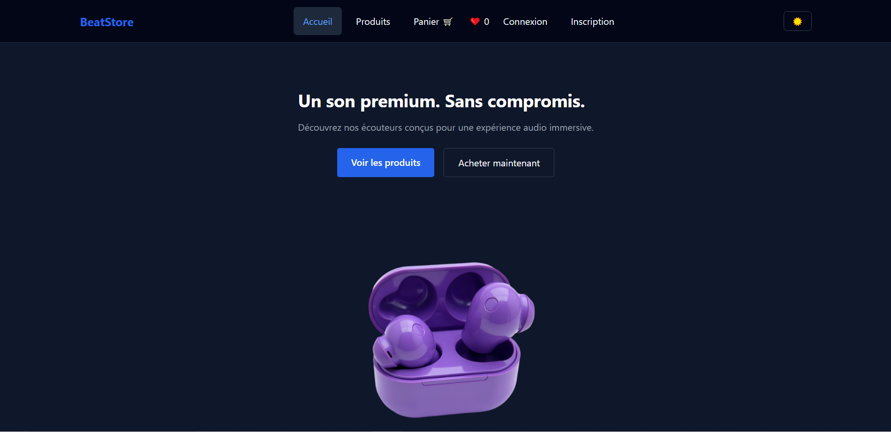

BeatStore ─ Fullstack MERN
Projet web : Plateforme e-commerce permettant d’acheter des beats en ligne avec authentification, panier dynamique et paiement sécurisé via Stripe.
- React + Vite
- Node.js / Express
- Stripe + Webhooks
- JWT/Bcrypt
- Mongo DB / Mongoose